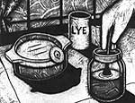
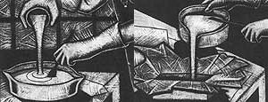
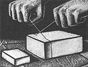

Soap is practically the easiest thing in the world to make and everybody uses it, so why not make your own specialized soap and start a profitable business?
Make Up A Batch of Soap
Ingredients:
1 pound package of lard, available at grocery stores (or see "Make Your Own Fat and Lye" on page 70)
4 tablespoons lye crystals, available at grocery stores
6 1/2 ounces of cold water, soft or distilled 1 container of lye, available in plumbing department of hardware stores (or see "Make Your Own Fat and Lye" on page 70) fragrance, perfume, cologne, potpourri, etc. (optional)
Equipment:
low-temperature cooking thermometer (usually ranges from 50'F to 200°F)
2 mixing containers made of glass, stainless steel, or enamel
rubber gloves
wooden spoon
wooden molds (or bottom of juice cartons lined with piece of plastic trash bag)
eye protection
Place lard in a glass bowl or suitable metal container, and melt in a 150°F oven. While waiting for lard to completely melt, read the precaution label on the lye container thoroughly. Lye is caustic and can burn your skin, so wear both rubber gloves and eye protection while working with it; handle lye with care at all times. Next, place the lye crystals in a small, dry container. Pour cold water-either soft or distilled-into a separate heavy glass container (canning jars work well). Don't use plastic, tin, or aluminum containers because lye reacts negatively with these materials.
Once the lard has melted, remove the bowl from the oven and place the cooking thermometer in the liquid. Wait until the fat cools to 95°F before proceeding to the next step. You can hasten the cooling process by immersing the bowl into a sink filled with cold water. Next, begin to add the cold water (which is already mixed in with the lye crystals) to the pre-measured lye in a glass container with a wooden spoon or stick, and stir. Continue stirring until all of the lye is dissolved.
The temperature of the lye solution will have risen to approximately 120°F. Let it cool down before you add it to the lard. When the lard has cooled to 85°F and the lye solution has cooled to 75°F (room temperature if you are estimating by touch), start slowly stirring the lard, and then add the lye solution in a thin, steady stream. Again, you can obtain the proper working temperatures of both liquids by transferring each vessel to a sink of hot or cold water, depending on whether you need to maintain heat or hasten cooling. Stir the mixture continuously for the first five minutes, and then stir only occasionally, until it reaches the consistency of sour cream and offers resistance to the spoon. (This process should take approximately 20 minutes). Then pour the mixture into your wooden molds or plastic-lined boxes.
I often use the bottoms of milk or juice cartons, lined with a very lightly oiled piece of plastic from a thin garbage bag. Cover the soap with a clean towel in order to prevent it from cooling off too quickly, and leave it to harden for three days so you'll be able to cut it into bars. Then remove the soap from the mold (or box) and place it on a bunch of paper towels to absorb excess moisture. To cut, wrap a piece of monofilament fishing line around the soap block, cross the ends like you're crossing shoe laces, and pull in opposite directions to cut even bars (see diagram on page 70). The soap will need to be cured for a minimum of two weeks (four weeks is even better) before being used.
This chemical process allows the soap "to keep" for longer periods of time. Stack the soap bars in a pyramid fashion to allow air to circulate, neutralizing any free lye; rotate them so all of the surfaces will be exposed to air. Here's a quick test to check for free lye: touch the tip of your tongue to a bar. If it stings a little, more curing time is required. Like wine and cheese, soap improves with age-which is why it's always best to make batches of soap well in advance of when you'll need them. If you wish to customize your soap, add some of your favorite brand of perfume, cologne, potpourri,
or other fragrance into the soap mixture, after the lye solution has been thoroughly mixed in with the lard. Do this in a separate container from the main mixture if you only want to try out a small amount. Figure that six or seven drops is enough for an entire batch. To make a moisturizing beauty soap, purchase a bar of cocoa butter from your pharmacy and melt it over a double boiler. Pour a quarter cup of the melted cocoa butter into the soap
mixture after the lye solution has been mixed with the lard. To make a dirt-buster soap, mix in one or more tablespoons of cornmeal (some people prefer ground pumice) after the lye solution has been mixed with the lard.
Packaging and Selling
The first step to selling your soaps is designing a wrapper and hiring a printer to print the design on colored, 40-pound paper. You can have the printer cut your paper for each individual bar of soap (this will cost you extra), or the printer can send you 11 x 14 sheets for you to cut yourself. A package (500 sheets) of 11 x 14 paper will usually run you somewhere between 16Q to 284, and you can wrap eight to 10 bars with each sheet.
Many states require that you include an ingredient list on any homemade products, such as this soap.
Wrap your bars of soap neatly and then tie a pretty piece of ribbon around each one. Next, place a few different bars of soap in an attractive basket filled with tissue paper or the plastic grass that lines Easter egg baskets. Place a label of your name (or company name) and phone number in a visible spot on the basket.
You're now ready to take them on the road. If you live anywhere near a city, leave a few samples with the owners of specialty shops or boutiques. If you live in a rural area, tote them door-to-door, relying on word of mouth. Include perfume in a bar or two, allowing potential customers a sniff; tell them you'd be happy to make custom blends if they can provide a bit of their fragrance for you. No matter where you live, advertise in the classifieds sections of magazines and newspapers. People jump at the chance to have personalized soap made with a fragrance of their own choosing.
You may also advertise your soap as multipurpose-without stretching the truth. Homemade soaps serve as good shampoos. Used in conjunction with a mug and brush, they're a commendable alternative to strong-smelling shaving creams. You can even grate a well-cured bar into soap flakes for cleaning laundry: simply add the soap to a tub of hot water and then add in a few tablespoons of Borax to improve sudsing (homemade varieties don't have much sudsing action). Allow the soap to dissolve before adding in your clothes. That's all there is to it.
You may have to wait a bit while word of mouth spreads around the area, but soon you'll be off to a prosperous hands-on business. Plus, you'll never have to buy soap again.
Make Your Own Fat and Lye
Fat
Use a coffee can as a receptacle for mixed cooking fats-from fried bacon, roast ham, pork, and lamb to boiled or roast beef. Fat from beef, lamb, and sheep make the best soap, but it would take too long to collect single-meat fats from cooking. (Poultry fat is too soft.)
When the can is full (holding a good two pounds), I clean the fat by simmering it in a gallon of water for a half hour. I strain the hot mix twice through a double thickness of cheese cloth, let it congeal and cool. Then I strip it off the top of the cold water. Any soft goop on the bottom is scraped off.
When I've accumulated several two-pound cans of once-cleaned fat, I add it all to twice the volume of water and simmer for a quarter hour or so; let cool and refrigerate. Then, I dump the pot and remove and clean the bottom of the round block of tallow. If the second water contains any color to speak of or is salty or meaty to the taste, I simmer it again till the water comes out clean. Once clean, tallow can be frozen indefinitely or stored in a cool place for a couple of months.
To render (melt down) fat, cleaning it at the same time, put a quart of water and one tablespoon of Kosher (non-iodized) canning salt per five pounds of fresh fat in a large pot and add fat cut into half-walnut-size chunks. Heat till water boils; then turn down to a high simmer for a quarter hour. When fat begins to rend, cover and turn heat down to 'a low simmer. Squeeze fat against the pot side and stir occasionally for six hours or so-till the tissues are soft, spongy, and largely free of fat.
Remove the pulpy tissues from the water with a slotted spoon. To eke out the last bit of fat, fry still-wet tissues over low heat till water evaporates, fat melts, and the tissues turn to brown, crispy chitlins. Cool the fat and boil it in water to clean and desalt.
Strain hot fat and water into a large, wide-topped bowl and let cool. Refrigerate long enough to harden fat. Then, dump out, saving the water as a protein-tonic for the hogs. Scrape every bit of the the gray, gloppy bottom layer off the bottom (getting it all out of holes) of the hard disc of tallow.
Lye
Lye is caustic and can burn your skin, so wear both rubber gloves and eye protection while working with it; handle lye with care at all times.
You can make your own lye by leaching (dissolving) the alkaline potash out of hardwood ashes. White oak and fruitwood ashes are best. Attach a wooden winemakers' spigot or wood plug into a hole in the side at the bottom of a heavy plastic trash container and set it up on bricks or a framework over a large plastic tub. Half-fill with fine hardwood ash. Add boiling water and stir. The ash will lose most of its bulk as it wets, so add more ash and enough hot water to make a thick soup, stirring with a wooden hoe handle till there's so much ash you can't reach the bottom easily. Cover and let steep for three or more days, stirring frequently.
Make a filter of several thicknesses of cheesecloth in a kitchen strainer and drain off liquid. It may take a day or more to get all the leachate, but let it drip. Restrain till clear. Boil down or let the water evaporate till it will float a fresh egg and use as lye solution in soap making.
Wood ash makes potassium lye or caustic potash that makes a soft soap. In the old days, it was kept in a wooden barrel (which it ate through in time) and was scooped out as needed. If flakes absorb airborne moisture, so keep the can stoppered and if a flake does get on your skin, flush into the sink with vinegar.
- Sarah Crowder
|
 Always wear protective gloves when you're creating your batches of soap. Otherwise the caustic lye may burn your skin. |
 When the lye solution cools to 75?, slowly add it to the lard (left). When the mixture becomes very thick, pour into molds (below). |
 Using a piece of monofilament fishing line to cut the large block of soap will give you nice clean edges. |